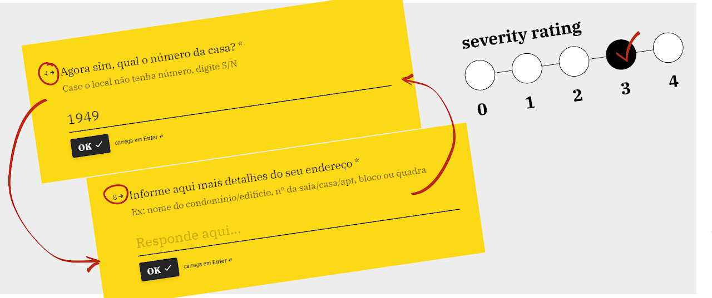

Case study: form usability analysis
This is a case study done voluntarily by me, with no involvement of any company that can be identified with the product described herein.
Context
In 2021 I applied for a credit card in a Brazilian digital bank. Then I faced some issues regarding the long time to submit a proposal and even after that, the card did not arrive within the stipulated time.
They sent me an email saying they couldn't deliver due to problems with my address. I was redirected to a nice TypeForm and there I submitted the information.
When proceeding in the sequence indicated by the flow, I came across some usability issues that got in the way a little. The following is a brief description of the problems with an indication of the degree of severity and a suggestion for improvement. I hope to help make the experience even more enjoyable for interested users.
The process
I used a methodology that consisted of analyzing the content of the data update form for violations of usability heuristics (Nielsen, 1985). When finding a problem, it would make a screen print to detail the problem, score the degree of severity and point out a possible solution.
Three issues were identified that violated two usability heuristics:
PROBLEM 1 Address and complement
PROBLEM 2 Character limitation
PROBLEM 3 Confirmation message
Problem 1: Address and complement

The problem: When typing addresses, it is expected that right after the house number the field for the complement appears. In this form, this did not happen.
The house number field is the fourth in the list. After it comes the neighborhood, city, state and only in field 8, it asks for more details.
This breaks convention and can be a bit confusing.

Severity degree: 3
Proposed solution: Position the field that asks for more address details (5) right after the house number field (4).
Problem 2: Character limitation

Problem: In the fields that require some typing, there is a character limitation, which is only informed to the user after he reaches the maximum amount.
There is no prior information for him to think about what he is going to type.
The maximum number of characters in the field (30) is very limited.

Severity degree: 4
Not informing in advance what the maximum limit of characters the user can type is a violation of Nielsen's Heuristic number 5: Error Prevention.
Proposed solution
The best thing is not to limit the number of characters. But if it's really necessary, here are two suggestions:
- add a typing counter to help the user understand that there is a limitation.
- increase the maximum amount of characters to double or triple.
Problem 3: Confirmation message

Problem: The confirmation page did not have a title to indicate what was happening.
The friendly message was disorganized, and even said that I had requested a card with another name.
This created insecurity. Who did I send my updated data to anyway?
Talking to a few people, I found out later that it was the old name of a similar product from the company and that the confusion may have been because they were still transitioning internally.

Severity grades: 1 and 4
The company name and brand must be consistent in all pieces of communication to convey trust to the user. This is Nielsen's Heuristic #1: Consistency and Patterns.
Proposed solution
- Add a title;
- Correct card name;
- Review what should be bold, to emphasize what the user really needs to know and not just random words;
- Review text alignment (left gives less problems) and line breaks. Paragraphs can also guide reading.
Conclusion
Although this is a voluntary analysis, conducted by a user anxious to receive her card, it is worth emphasizing the relevance of the initiative.
Small usability issues, when fixed, can have a big impact on the user experience of people who want to own a credit card.
It is recommended to consider the degree of severity indicated in each situation when prioritizing the backlog.